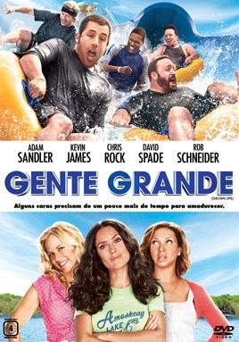

Filmes
Trailers
Trilha Sonora
Contato
Sobre
Gente Grande

Diretor:
Dennis Dugan
Com:
Adam Sandler, Kevin James, Chris Rock, David Spade, Rob Schneider, Salma Hayek, Maria Bello
Gênero:
Comédia
Censura:
12 anos
Tempo de Duração:
1h42min
Sinopse:
Lenny (Adam Sandler), Kurt (Chris Rock), Eric (Kevin James), Marcus (David Spade) e Rob (Rob Schneider) se conhecem desde pequenos. Passados trinta anos, os cinco amigos se reencontram para curtir um fim de semana juntos com as respectivas famílias, mas o feriado de 4 de Julho em uma casa no lago promete muito mais diversão do que apenas lembranças dos bons momentos. Casados e com várias crianças, os homens de família terão de confrontar o fato de não serem mais tão jovens.